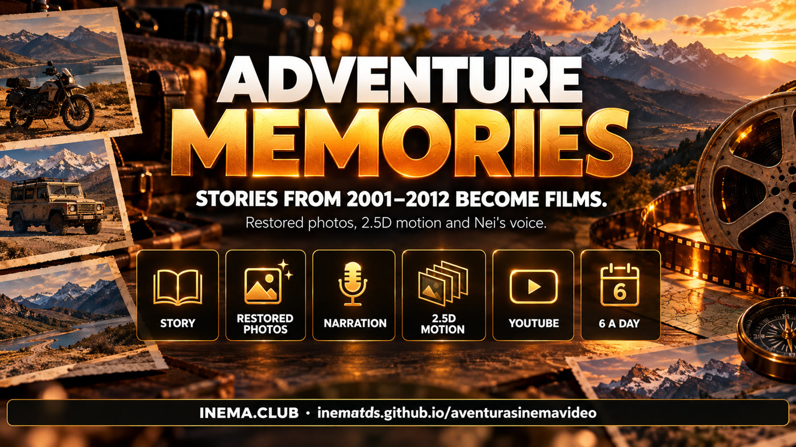

aventurasinemavideo is the project that produces the Adventure Memories series. It takes real stories from the INEMA Aventura archive (aventura.inema.club, from 2001 to 2012), along with accounts and photos sent by the adventurers themselves, and turns each one into a one-to-three-minute narrated film. The films are for people who lived those stories and anyone who loves adventure: they are free to watch on the Aventuras INEMA YouTube channel. Just open the channel to watch; the repository holds the rules and the engine that assembles the films.
About
A 20-year archive, told again
From 2001 to 2012, INEMA Aventura collected stories and photo albums from motorcyclists, jeepers, climbers, and travelers. This series brings those stories out of the archive and tells them again in video.

📖 Only what happened
The script comes from the original account and the album photos. Nothing is made up beyond what the text and images show.
📷 Old photos renewed
Digital camera photos from the 2000s are restored and brought to life with depth, stacks, strips, and mosaics.
🎙️ Nei's voice
Narration uses the voice of Nei Maldaner, INEMA's creator, and each story gets a soundtrack and title cards.
How it works
From story to video on the channel
Every episode goes through the same steps. In plain language:
Choose the story→Select the best photos→Write the script→Record the narration→Restore the photos→Add motion→Assemble the film→Publish on YouTube→Notify the author
1
Story with an account and photos
Only stories with an original adventure account (at least 250 words) and an album with at least 12 full-size photos are included.
2
Script and voice
The account becomes 9 to 15 spoken sections. Years and numbers are written out, and every word of the narration is checked before moving on.
3
Images and editing
About 12 photos are restored, given a depth map for the 2.5D effect, and assembled with the voice, soundtrack, and title cards.
Album photos appear in stacks, strips, and mosaics — here, in the episode about Telmo Machado da Silva.Restored photo with depth motion: the Andes road on a 2004 motorcycle trip.
The daily rule
6 videos a day, until the archive runs out
The goal is to turn every story in the archive with an account and images into a video. To do that, the series follows a steady pace.
6
Videos per day
Six episodes published each day on the Aventuras INEMA channel.
2
From subscribers
Two videos a day from stories by archive subscribers. The count is by story, not person.
4
By other authors
Four videos across different subjects (motorcycles, trails, climbing, jeeps, horseback riding, travel), at most one per person.
✉️
Notify the author
Whoever sent the story gets the video link, download link, and channel link by email.
Published episodes
The first 6 episodes
All on the Aventuras INEMA channel. Click an image to watch.
#1 · Telmo Machado da Silva — 6,700 km by motorcycle across South America (2004). Watch ▸#2 · Lameiros do Sul — 11 jeeps to Bonito and the Pantanal (2006). Watch ▸#3 · Naoki Arima and Ricardo Rutz — climbing in Chile (2002). Watch ▸#4 · Natan Smaniotto — from father to son on the tracks (2002–2005). Watch ▸#5 · Ana Cristina Sommer — riding gear for women motorcyclists (2002). Watch ▸#6 · Guilherme Borges — Andes Kids Expedition (2003). Watch ▸
Step by step · behind the scenes
How an episode is assembled
For anyone who wants to understand (or reproduce) the process. The scripts are in the repository's motor/ folder; the complete example is episode 6 (motor/filme_exemplo_guilherme.py and motor/roteiro_exemplo_guilherme.md [Portuguese]). Everything runs on the local computer, using the subscription for voice and image restoration.
1
Find the story and album
Each episode gets its own folder, copied from a finished episode. The story text and full-size album photos are gathered, then the photos are sorted by category and rating.
# episode folder, copied from a finished onecp -r ~/projetos/output/memorias-aventura-guilherme ~/projetos/output/memorias-aventura-<slug>
2
Write the script
roteiro.md [Portuguese] has 9 to 15 sections, using only what the account and photos tell. Years and numbers are spelled out in the spoken text so the voice reads them correctly.
One audio file per section, in Nei's voice. Then the audio is cut, paced, and leveled, and transcribed word for word. Wrong word = rewrite the sentence and record it again.
bash motor/tts.sh # narration by section (nei voice)python3 motor/pos_voz.py # cuts, pacing, volume, and transcription
4
Timeline, soundtrack, and photos
The timeline and soundtrack (voice + music) are assembled; old photos are restored and given a depth map for 2.5D motion.
The film is built section by section (stacks, strips, mosaics, depth, and title cards). Before publishing, each section's frames and duration are checked.
python3 filme.py # all sections + final assemblypython3 filme.py B03 # rebuild just one section
6
Publish and notify
The video is uploaded to the Aventuras INEMA channel with yt-pubx, first as a dry run to check the text. Then the full description is added, the author gets an email, and the episode is logged in EPISODIOS.md [Portuguese].
6 episodes liveThe first six films were published on the Aventuras INEMA channel on October 9 and 10, 2026.
Now
6 per dayPublishing queue with an automatic retry when YouTube reaches its daily upload limit.
Limits
New channel and YouTube quotaUntil the channel is verified, videos go up without custom thumbnails and with a low daily upload cap; the YouTube API daily quota also limits how many videos can be uploaded each day.
Goal
The entire archive on videoEvery INEMA Aventura story with an account and images becomes an episode in the series.